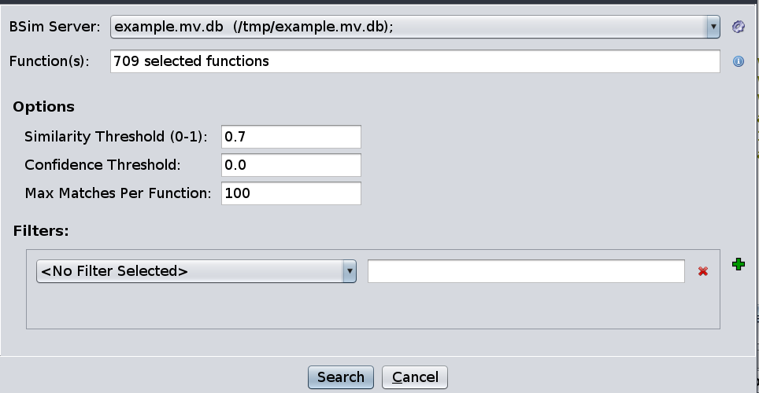
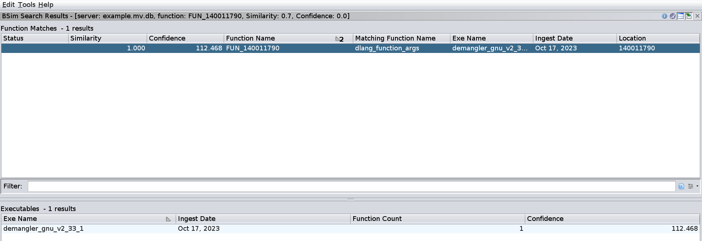

Basic BSim Queries
In this section, we demonstrate some applications of our BSim database.
Registering a BSim Database
In order to query the database, you must register it with Ghidra:
- From The Code Browser, Select BSim -> Manage Servers.
- In the BSim Server Manager dialog, click the green plus
 .
.
- Select the File radio button and use the chooser to select
example.mv.db
- Click OK
- Click Dismiss to close the dialog.
How to Query a BSim Database
Before presenting the exercises, we describe the general mechanics of querying a BSim database.
Initiating a BSim Query
There are a number of ways to initiate a BSim query, including:
- BSim -> Search Functions… from the Code Browser.
- Right-click in the Listing and select BSim -> Search Functions…
- Click on the BSim icon
 in the Code Browser toolbar.
in the Code Browser toolbar.
For these cases, the function(s) being queried depend on the current selection.
If there is no selection, the function containing the current address is queried.
If there is a selection, all functions whose entry points are within the selection are queried.
An easy way to query all functions in a program is to select all addresses with Ctrl-A in the Listing window and then initiate a BSim query.
It is also possible to initiate a BSim query from the Decompiler window.
Simply right-click on a function name token and select BSim… to query the corresponding function.
This action is available on the name token in the decompiled function’s signature as well as tokens corresponding to names of callees.
All of these actions bring up the BSim Search Dialog.
The BSim Search Dialog
From the BSim Search Dialog, you can
- Select which BSim database to query.
- Set query thresholds.
- Bound the number of results returned for each function.
- Set query filters.

Selecting a BSim Database
To query a registered BSim database, select that server from the BSim Server drop-down.
Setting Query Options
Similarity and confidence are scores used to evaluate the relationship between two vectors.
The respective fields in the dialog set lower bounds for these values for the matches returned by BSim.
- Similarity
- Formally, the similarity of a match is the cosine of the angle between the vectors.
- For BSim vectors, this value will always be between 0.0 and 1.0.
- The higher the similarity score, the closer the vectors.
- Confidence
- Intuitively, confidence quantifies the meatiness of a match.
- Shared features increase this score and differing features decrease this score.
- Sharing rare features contributes more to this score than sharing common features.
- There is no upper bound for confidence when considered over all pairs of vectors.
However, if you fix a vector v, the greatest possible confidence score for a comparison involving v occurs when v is compared to itself.
The resulting confidence value is called the self-significance of v.
Confidence is used to judge the significance of a match.
For example, many executables contain a function which simply returns a constant value.
Given two executables, each with such a function, the similarity score between the corresponding BSim vectors will be 1.0.
However, the confidence score of the match will be quite low, indicating that it is not very significant that the two executables “share” this code.
In general, setting the thresholds involves a tradeoff: lower values mean that the database is more likely to return legitimate matches with significant differences, but also more likely to return matches which simply happen to share some features by chance.
The results of a BSim query can be sorted by the similarity and/or confidence of each match, so a common practice is to set the thresholds relatively low and to examine the matches in descending sort order.
The Matches per Function bound controls the number of results returned for a single function.
Note that in large collections, certain small or common functions might have substantial numbers of identical matches.
Filters are discussed in BSim Filters.
Click the Search button in the dialog to perform a query.
After successfully issuing a query, you will also see a Search Function(s) action (without the ellipsis) in certain contexts.
This will perform a BSim query on the selected functions using the same parameters as the last query (skipping the BSim Search Dialog).
Exercises
The database example contains vectors from a Linux executable used by Ghidra’s GNU demangler.
Ghidra ships with several other versions of this executable.
We use these different versions to demonstrate some of the capabilities of BSim.
Note: Use the default query settings and autoanalysis options for the exercises unless otherwise specified.
Exercise: Function Identification
- Import and analyze the binary
<ghidra_install_dir>/GPL/DemanglerGnu/os/win_x86_64/demangler_gnu_v2_41.exe.
- This executable is based on the same source code as
demangler_gnu_v2_41 but compiled with Visual Studio instead of GCC.
- Examine this binary in Ghidra and verify that the original function names are not present.
- Note that the function names are present in
demangler_gnu_v2_41.
- Using the default query options, query
example for matches to the function at 140006760.
- You should see the following search results:

- In this case, there is exactly one match, the similarity is 1.0, and the matching function has a non-default name (it won’t always be this easy).
- The results window has two tables: the function-level results (upper table) and the executable-level results (lower table).
The executable-level results are covered in From Matching Functions to Matching Executables.
- Right-click on the row of the match and perform the Compare Functions action to bring up the side-by-side comparison.
- The Listing View tab shows the disassembly.
- The Decompiler Diff View tab shows the decompiled code.
- Differences in the code are automatically highlighted in cyan.
- Either view can be toggled between a horizontal split and a vertical split using the drop-down menu.
- Examine the diff views to verify that the match is valid.
- Using the Apply Name action in the BSim Search Results table, apply the name from the search result to the queried function.
Note: We cover the Decompiler Diff View in greater detail and discuss the various “Apply” actions in Evaluating Matches and Applying Information.
Exercise: Changes to the Source Code
- Import and analyze the executable
<ghidra_install_dir>/GPL/DemanglerGnu/os/linux_x86_64/demangler_gnu_v2_24.
- This executable is based on an earlier version of the source code than the executable in
example.
- Navigate to the function
expandargv in demangler_gnu_v2_24 and issue a BSim query.
- What differences do you see in the decompiled code of the single match?
In demangler_gnu_v2_41...
The main differences are that call to dupargv is now in an if clause (and decompiler creates a related local variable) and there are two additional calls to free.
- The relevant source files are included with the Ghidra distribution:
<ghidra_install_dir>/GPL/DemanglerGnu/src/demangler_gnu_v2_24/c/argv.c<ghidra_install_dir>/GPL/DemanglerGnu/src/demangler_gnu_v2_41/c/argv.c
- Verify that the differences you found are present in the source.
Exercise: Cross-architectural Matching
- Import and analyze the executable
<ghidra_install_dir>/GPL/DemanglerGnu/os/mac_arm_64/demangler_gnu_v2_41.
- This executable is based on the same source code as the executable in
example but compiled for a different architecture.
- Note: this file has the same name as the one we used to populate the BSim database, so you will have to give the resulting Ghidra program a different name or import it into a different directory in your Ghidra project.
- Navigate to
_expandargv and issue a BSim query.
In the decompiler diff view of the single match, what differences do you see regarding memmove and memcpy?
In the arm64 version...
In the arm64_version, the compiler replaced these functions with __memmove_chk and __memcpy_chk. The __chk versions have an extra parameter related to preventing buffer overflows. Neither the names nor the bodies of callees are incorporated into BSim signatures, but the arguments of a call are, so this change partly explains why the BSim vectors are not identical.
- Examine the Listing View tab and verify that the architectures are indeed different.
A Remark on Query Thresholds and Indices
Q: If you set the similarity and confidence thresholds to 0.0, will a BSim query return all of the functions in the database?
A: No, because
- For indexed databases (i.e., PostgreSQL and Elasticsearch), the index is designed so that vector comparisons are only performed between vectors which are likely to be close.
Most vectors will not even be considered as potential matches for a given queried vector.
- Regardless of database backed, matches are only shown if the confidence score is above the confidence threshold of the query.
The interface will not allow you to set a negative confidence threshold, but confidence scores can be negative.
- The Matches per Function parameter also controls how many functions are returned.
Next Section: Ghidra from the Command Line